La vidéo de *Pursuing AI* explore la confrontation entre deux géants de l'édition et de la génération d'images par IA : le nouvel entrant **Seedream 4.0** (développé par ByteDance, l'entreprise derrière TikTok) et le modèle **Nano Banana**, précédemment considéré comme le destructeur ultime de Photoshop. Le créateur orchestre une démonstration comparative rigoureuse, confrontant les capacités des deux outils sur des cas d'usage réels et complexes, allant de la fusion d'images à la manipulation de texte typographique, en passant par l'inpainting contextuel et la résolution de problèmes mathématiques complexes sur tableau noir.
La méthode adoptée par le vidéaste repose sur un benchmark empirique structuré. Il commence par analyser les démos officielles spectaculaires de ByteDance pour Seedream 4.0, avant de les soumettre à l'épreuve de ses propres prompts et images de test. Chaque outil est évalué sur sa capacité à maintenir la cohérence visuelle, à respecter les proportions, à gérer l'éclairage nocturne, à manipuler des éléments textuels avec précision et à exécuter des modifications chirurgicales sans altérer le reste de l'image de référence. Ce face-à-face met en lumière les forces et les faiblesses respectives des modèles, notamment la supériorité de Seedream en matière de typographie et de fusion contextuelle, face à la précision de Nano Banana sur certains détourages et modifications texturées.
Pour les créateurs de contenu et les professionnels de la vidéo, cette analyse offre des enseignements stratégiques majeurs sur l'état de l'art de l'édition générative. Elle démontre comment l'intelligence artificielle redéfinit les workflows traditionnels de post-production, permettant de modifier des affiches, de coloriser des archives, ou de transformer des styles visuels complexes en quelques secondes. Comprendre les subtilités de promptage de ces outils permet aux créateurs d'optimiser leurs pipelines de production visuelle, d'économiser un temps précieux sur des logiciels lourds comme Photoshop, et de choisir l'IA la plus adaptée à chaque tâche spécifique.
Il y a tout juste quelques semaines, Nano Banana ressemblait au destructeur ultime de Photoshop. Mais maintenant, oubliez cette idée, un nouvel éditeur et générateur d'images est arrivé, et il fait paraître Nano Banana lui-même obsolète. Je sais que cela semble difficile à croire, alors dans cette vidéo, je vais vous montrer des exemples réels et des comparaisons directes avec Nano Banana. Plongeons-nous-y directement. Le modèle s'appelle Seedream 4.0, créé par ByteDance, l'entreprise derrière TikTok.
Interface & Outils : Démonstration de visuels générés par IA et affichage d'un logo d'entreprise.
Contenu textuel & Code : Visuels d'exemples d'images IA (portrait de femme et personnage de Catwoman), logo textuel "ByteDance | Seed".
Action / Démonstration : Défilement de différentes images générées par IA pour illustrer les performances du modèle Seedream 4.0, suivi d'une transition avec le logo de ByteDance Seed.
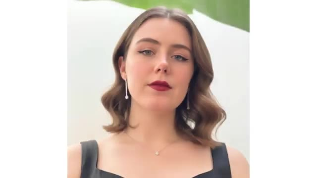
🔍 Agrandir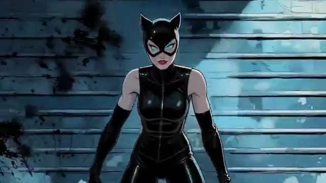
🔍 Agrandir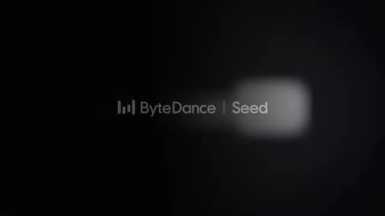
🔍 AgrandirSur leur site web, ils partagent quelques exemples. Supposons que vous téléciez une tonne d'images et que vous lui demandiez de les fusionner toutes ensemble en une seule image. Le résultat est insensé. Il comprend parfaitement le tout, et tout ressemble exactement à l'image de référence. Vous pouvez également modifier le texte d'une affiche, comme ceci, ou même changer complètement l'éclairage de la scène, comme ceci. Il est également très doué pour coloriser des photos en noir et blanc, et au-delà de l'édition, il est extrêmement puissant pour générer des images aussi. Par exemple, vous pouvez lui demander de concevoir une page d'atterrissage pour cette galerie, comme ceci, ou vous pouvez lui demander de résoudre une équation, et le
Interface & Outils : Site web de présentation de l'outil Seedream 4.0.
Contenu textuel & Code : Texte « Seedream 4.0 », exemples visuels de fusion d'images, instructions textuelles et résolutions d'équations mathématiques sur fond de tableau noir.
Action / Démonstration : Démonstration des différentes capacités de l'intelligence artificielle Seedream 4.0 (fusion d'images, édition de texte/éclairage, colorisation et génération).
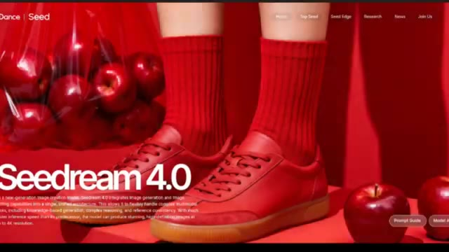
🔍 Agrandir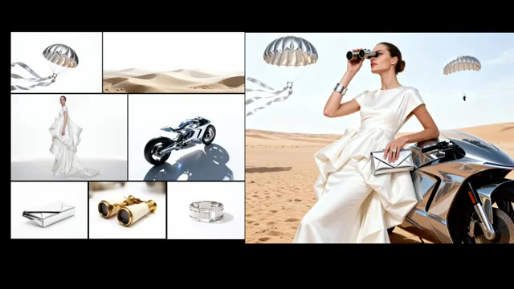
🔍 Agrandir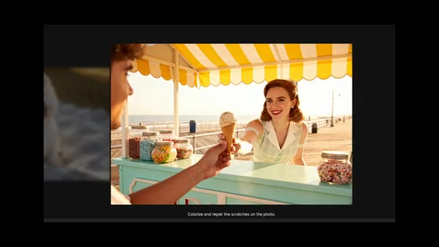
🔍 Agrandir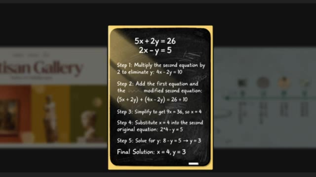
🔍 Agrandirsolution de l'équation sur un tableau noir. Et puis regardez les résultats pour voir avec quelle précision il comprend le prompt et donne également la solution. Incroyable. Ce sont des exemples complètement fous. Regardez juste à quel point c'est insensé. Maintenant, bien sûr, ce sont leurs démos officielles, elles ont donc pu être triées sur le volet. Ensuite, je vais vous montrer mes propres expériences et comparaisons avec Nano Banana. Le cas d'usage des équations est intéressant. J'ai essayé le même prompt, mais avec une équation différente et les résultats ont été impressionnants. Seadream l'a exécuté parfaitement.
Interface & Outils : Démonstration vidéo de génération de contenu par intelligence artificielle (outils Seadream / Nano Banana).
Contenu textuel & Code : Équations mathématiques textuelles sur fond de tableau noir, étapes de résolution (Step 1 à Step 5), solution finale (x=4, y=3). Texte "AI" visible en haut à gauche sur l'image 2.
Action / Démonstration : Démonstration et comparaison de résultats de génération d'IA sur des cas d'usage d'équations mathématiques et de vidéos d'action.
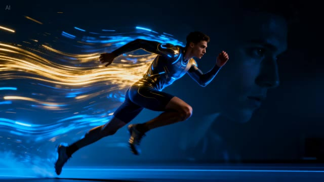
🔍 Agrandir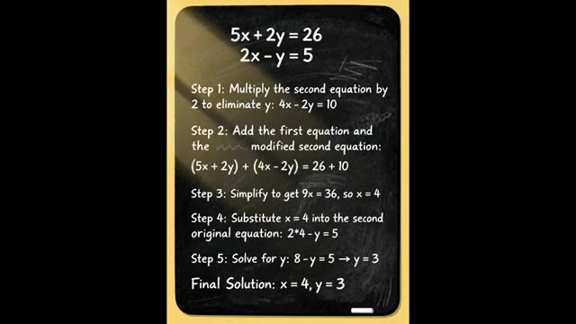
🔍 Agrandir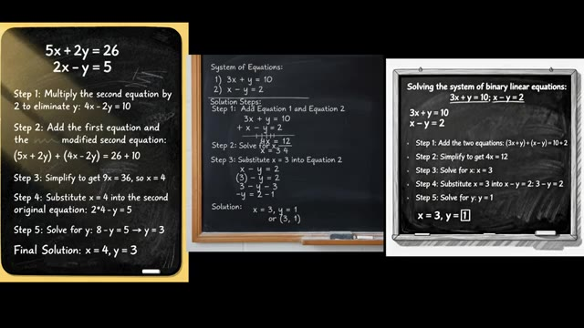
🔍 Agrandirtandis que Nano Banana a également obtenu la bonne réponse et les étapes, mais les a présentées de manière un peu brouillonne sans exploiter au mieux l'espace. Pourtant, les deux modèles ont réussi à produire le bon résultat. J'ai utilisé cette image et lui ai donné une invite. Ajoute un crocodile dans la rivière. L'image doit être cohérente et naturelle. Maintenant, en regardant le résultat de SeaDream, c'est impressionnant.
Interface & Outils : Affichage comparatif côte à côte de rendus générés par différentes intelligences artificielles (Seedream et Nano Banana).
Contenu textuel & Code : Texte sur tableaux noirs détaillant les étapes mathématiques pour résoudre un système d'équations, puis étiquettes « INPUT » et « SEEDREAM » sous deux photographies similaires avec et sans crocodile.
Action / Démonstration : Présentation visuelle comparative des résultats de résolution mathématique et de modification d'image par IA.
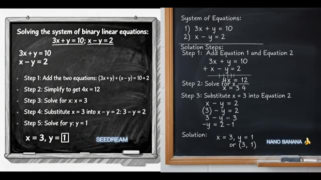
🔍 Agrandir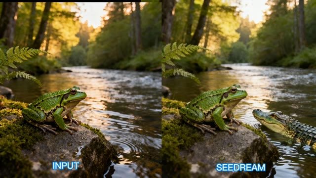
🔍 AgrandirLe crocodile se fond parfaitement. Tout semble naturel et l'image reste cohérente avec la référence. D'un autre côté, Nano Banana offre également un bon résultat, mais il y a une erreur évidente. Le crocodile est beaucoup trop grand, et cela ne fait tout simplement pas naturel. C'est pourquoi, dans ce tour, je donne le point à Sea Dream. Voici un autre exemple d'ajout d'éléments à une image.
Interface & Outils : Présentation comparative de résultats de modèles d'IA générative d'images (Seedream vs Nano Banana).
Contenu textuel & Code : Textes étiquetant les images : "INPUT", "SEEDREAM", et "NANO 🍌".
Action / Démonstration : Le présentateur compare les résultats des différents modèles d'IA sur l'intégration d'un crocodile dans une scène naturelle avec une grenouille.
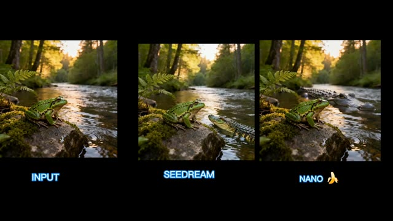
🔍 AgrandirJ'ai téléchargé une photo de Robert Pattinson et j'ai utilisé ce prompt. Ajoute un masque de Batman noir réaliste sur le visage de Robert Pattinson pour qu'il corresponde à son look et à l'éclairage. Le résultat de Nano Banana est bon. Le masque s'adapte bien, et seule la forme du visage a un peu changé, mais ça reste bien. Le résultat de Sea Dream n'était pas bon.
Interface & Outils : Interface de démonstration vidéo montrant des comparaisons d'images générées par IA.
Contenu textuel & Code : Photo de Robert Pattinson en entrée et résultat généré étiqueté "NANO" avec le logo d'une banane.
Action / Démonstration : Le présentateur compare l'image d'entrée originale avec le résultat modifié par IA où un masque de Batman a été ajouté.
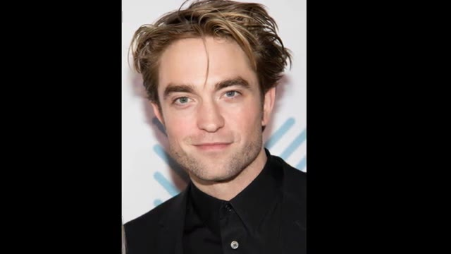
🔍 Agrandir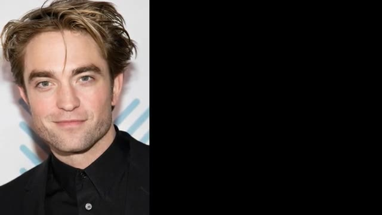
🔍 Agrandir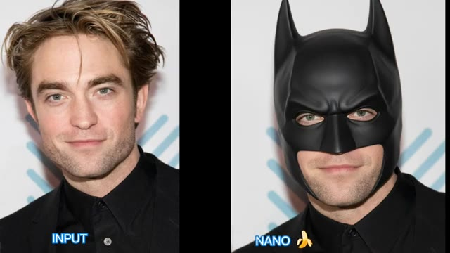
🔍 AgrandirIl a ajouté le masque, mais ne l'a pas réparé, et il a également changé son expression faciale. Donc cette fois, le point va à Nano Banana. J'ai utilisé cette image et donné une instruction pour la changer en mode nuit. Voici le résultat de SeaDream. C'est devenu la nuit, mais les lampadaires sont restés allumés. D'un autre côté, Nano Banana a également gardé les lampadaires allumés, mais a éteint les lumières des bâtiments.
Interface & Outils : Présentation vidéo comparative avec des visuels générés par IA et des étiquettes textuelles (INPUT, NANO, SEEDREAM, *DAYTIME*).
Contenu textuel & Code : Texte à l'écran : "INPUT", "NANO" avec une icône de banane, "SEEDREAM", et "*DAYTIME*". [Démonstration comparative] Le présentateur compare les performances de deux modèles d'IA (Nano Banana et SeaDream) sur la modification d'images (ajout d'un masque et changement d'éclairage de nuit à jour).
Action / Démonstration : Démonstration pédagogique et présentation du workflow.
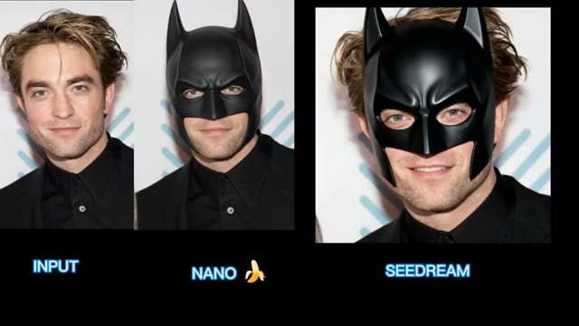
🔍 Agrandir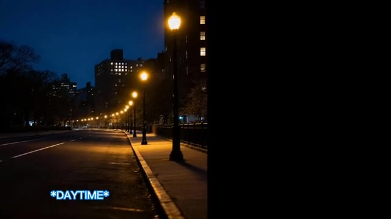
🔍 Agrandir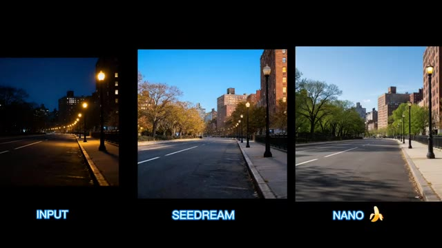
🔍 AgrandirDans SeaDream, les lumières des bâtiments sont toujours allumées. Laissez un commentaire ci-dessous pour me dire à quel outil vous donneriez des points. Ici, j'ai utilisé une image de vue aérienne de la tour Eiffel et j'ai donné un prompt pour la transformer en version nocturne. Le résultat de SeaDream bascule bien la scène en mode nuit, avec les lumières des bâtiments visibles, mais les lumières de la tour Eiffel restent éteintes. D'un autre côté, Nano Banana comprend clairement mieux ma requête. À la fois les bâtiments et les lumières de la tour Eiffel brillent magnifiquement.
Interface & Outils : Interface de présentation comparative d'outils d'IA générative (Seedream vs Nano Banana).
Contenu textuel & Code : Texte visible : "INPUT", "SEEDREAM", "NANO" avec une icône de banane. Visuels de la tour Eiffel et de rues urbaines.
Action / Démonstration : Le présentateur compare les performances de deux modèles d'IA (Seedream et Nano Banana) sur une tâche de modification d'éclairage (transformation de jour en nuit).
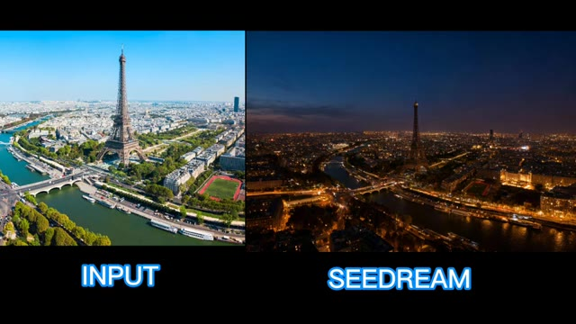
🔍 Agrandir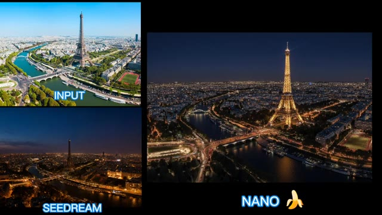
🔍 AgrandirDonc, le point revient à Nano Banana. Comme nous l'avons vu avec Seadream, il fonctionne très bien lorsqu'il s'agit de modifier du texte. Pour tester cela, j'ai utilisé leur image sur laquelle était écrit « Santiago Music Festival » et j'ai donné le prompt suivant : Change Santiago Music Festival to Pursuing AI. Les résultats de Seadream sont parfaits, alors que Nano Banana n'est pas efficace pour modifier correctement le texte et ne supprime pas Music Festival. Comme il s'agit d'exemples de Seadream, cela pourrait être injuste pour Nano Banana. J'ai donc utilisé ma propre image avec « Golf Club Meet and Great » écrit dessus et j'ai donné le prompt : Change Golf Club Meet and Great to Basketball Club. Get a chance to meet Ronaldo and Messi.
Interface & Outils : Interface de démonstration vidéo avec affichage comparatif d'images, de prompts textuels et de résultats de génération IA.
Contenu textuel & Code : Textes visibles : "Santiago Music Festival", "Change Santiago Music Festival To Pursuing AI", "SEEDREAM", "NANO BANANA", "GOLF CLUB MEET & GREAT", "Change 'Golf Club Meet and Great' to 'Basketball Club - Get a chance to Meet Ronaldo and Messi'".
Action / Démonstration : Le présentateur compare visuellement les performances de modification de texte entre Seedance et Nano Banana en affichant les images originales, les prompts et les résultats côte à côte.
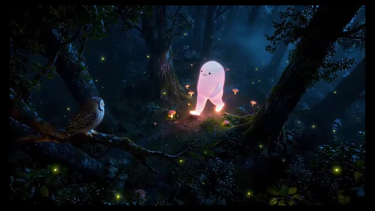
🔍 Agrandir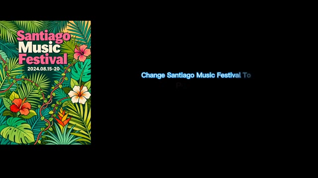
🔍 Agrandir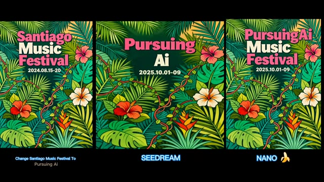
🔍 AgrandirConservez la palette de couleurs, la police et l'alignement du texte inchangés. Voici le résultat. C Dream a parfaitement réussi, incluant même le tiret que j'ai spécifié dans le prompt. Nano Banana, cependant, a clairement échoué dans ce tour. Je ne sais pas pourquoi, mais il a ajouté des éléments supplémentaires à l'image. Ici, les points vont à C Dream. J'ai utilisé cette image et donné le prompt : Ajoutez de nombreuses traînées de flou de mouvement à cette personne qui court vite. Voici les résultats des deux modèles. Alors, lequel devriez-vous choisir ? Dans ce cas, je préfère la génération de Nano Banana, j'ai téléchargé cette image de pizza et donné le prompt : Faire ressembler la pizza à un dessin 2D fantaisiste
Interface & Outils : Interface de tutoriel ou de comparatif vidéo montrant des superpositions de texte, des prompts et des résultats de génération d'images par IA.
Contenu textuel & Code : Textes visibles : "GOLF CLUB MEET & GREAT", "Change 'Golf Club Meet and Great' to 'Basketball Club -Get a Chance to Meet Ronaldo and Messi. Keep the color scheme, font, and alignment of the text...", "INPUT", "SEEDREAM", "NANO", "Make pizza look like a 2D whimsical..."
Action / Démonstration : Présentation comparative de différents modèles de génération d'IA évaluant leur capacité à modifier du texte sur image et à appliquer des effets visuels (flou de mouvement, style artistique).
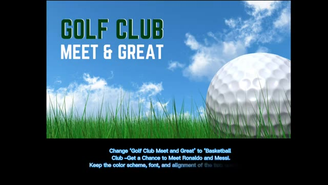
🔍 Agrandir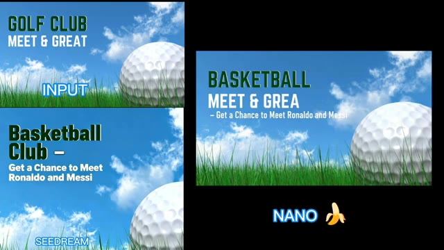
🔍 Agrandir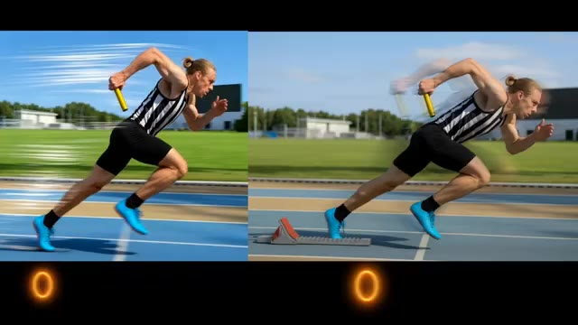
🔍 Agrandir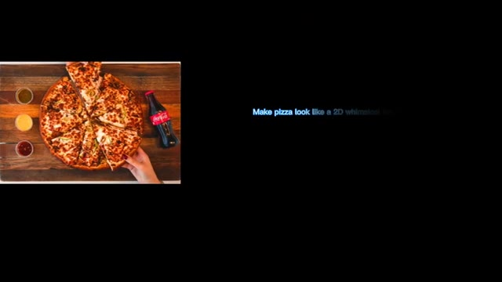
🔍 Agrandirillustration animée, tout en gardant exactement tout le reste de l'image identique. Dans le prompt, j'ai spécifiquement mentionné uniquement la pizza, mais Seadream a transformé toute l'image en 2D. D'un autre côté, Nano Banana a fait une petite erreur en transformant également la main en 2D. Mais dans l'ensemble, la génération de Nano Banana est bonne. Je devrais donc donner un point à Nano Banana. Et avant de partir, je veux juste partager ceci. Je recherche constamment de nouveaux outils d'IA qui peuvent vraiment vous simplifier la vie, alors n'oubliez pas de vous abonner et de garder une longueur d'avance
Interface & Outils : Interface de comparaison de modèles de génération d'images par IA et navigateur web sur ordinateur portable.
Contenu textuel & Code : Texte du prompt : « Make pizza look like a 2D whimsical hand-drawn anime illustration while keeping everything else in the image exactly the same. », et labels « SEEDREAM » et « NANO » accompagnés d'une icône de banane.
Action / Démonstration : Présentation comparative de deux modèles d'IA générative (Seadream et Nano Banana) modifiant une image de pizza, suivie d'une illustration vidéo d'un utilisateur naviguant sur des outils d'IA.
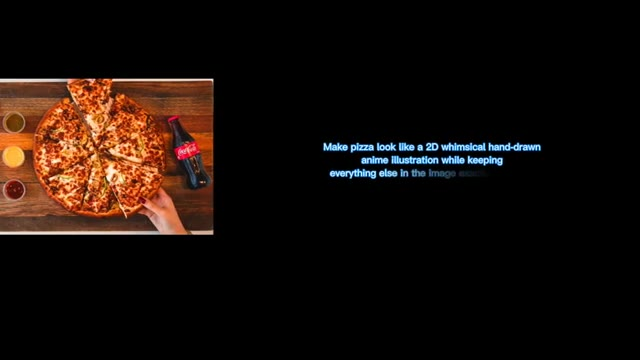
🔍 Agrandir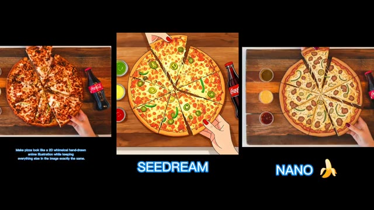
🔍 Agrandir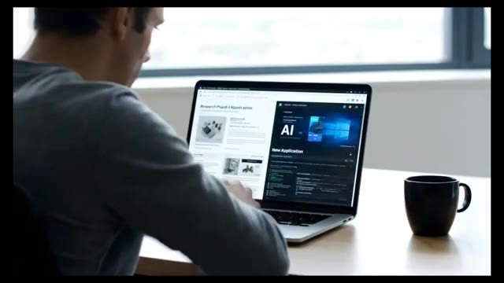
🔍 Agrandir